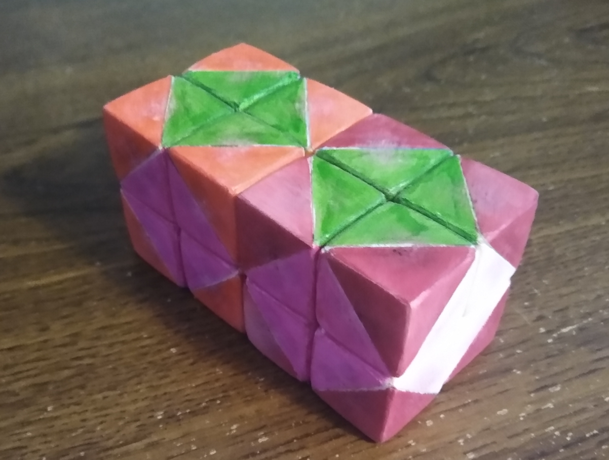
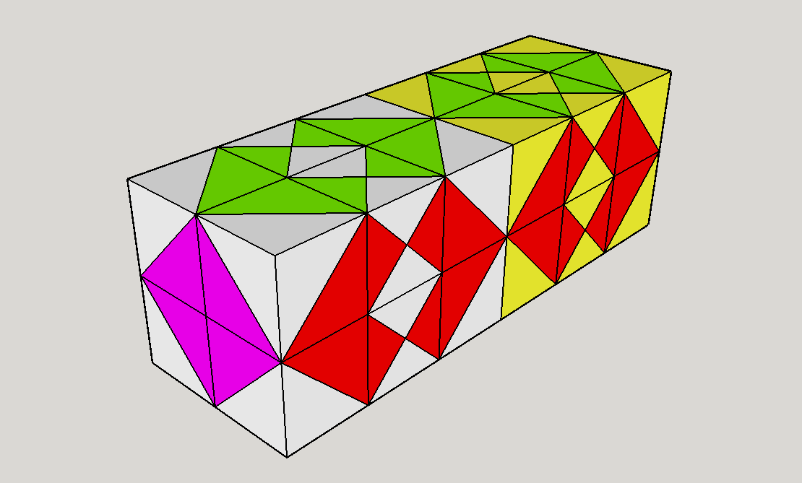
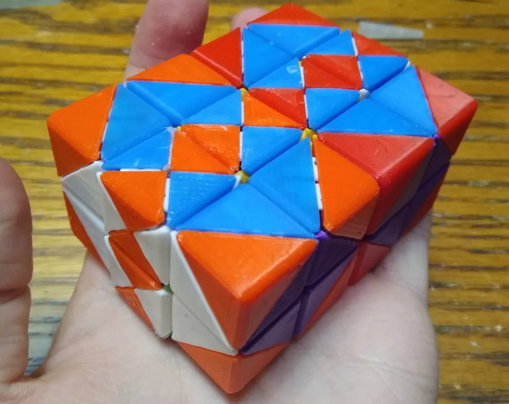
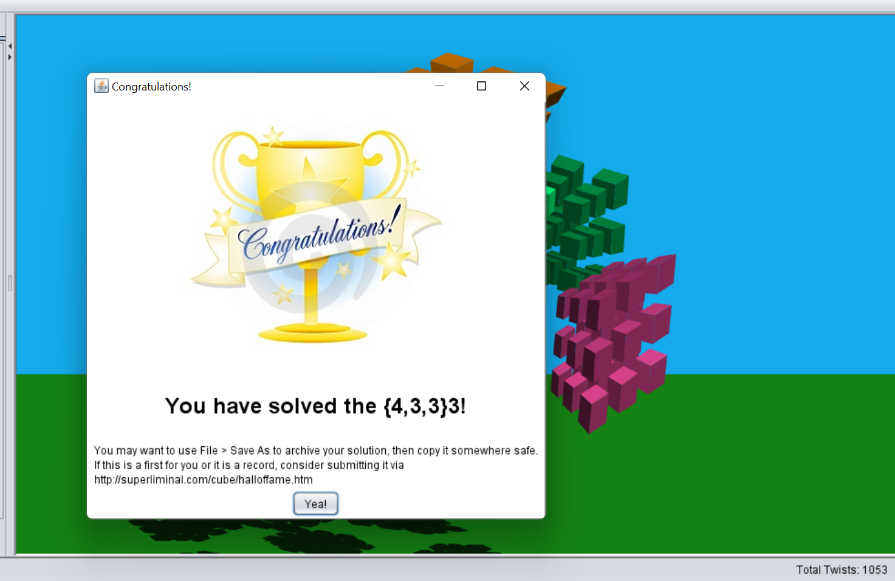
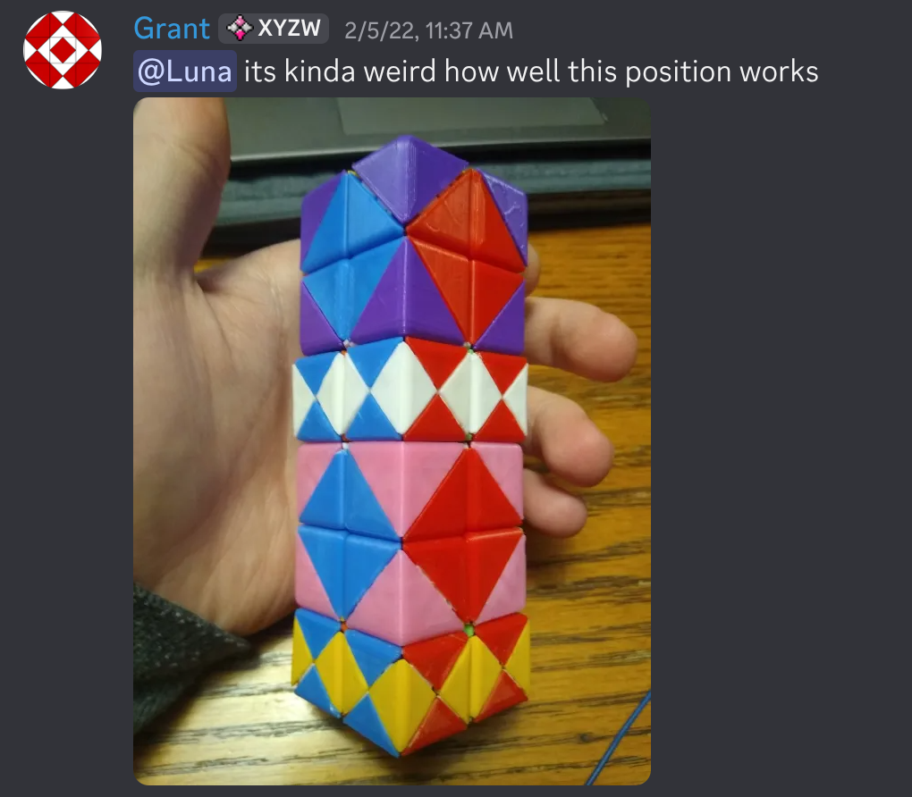
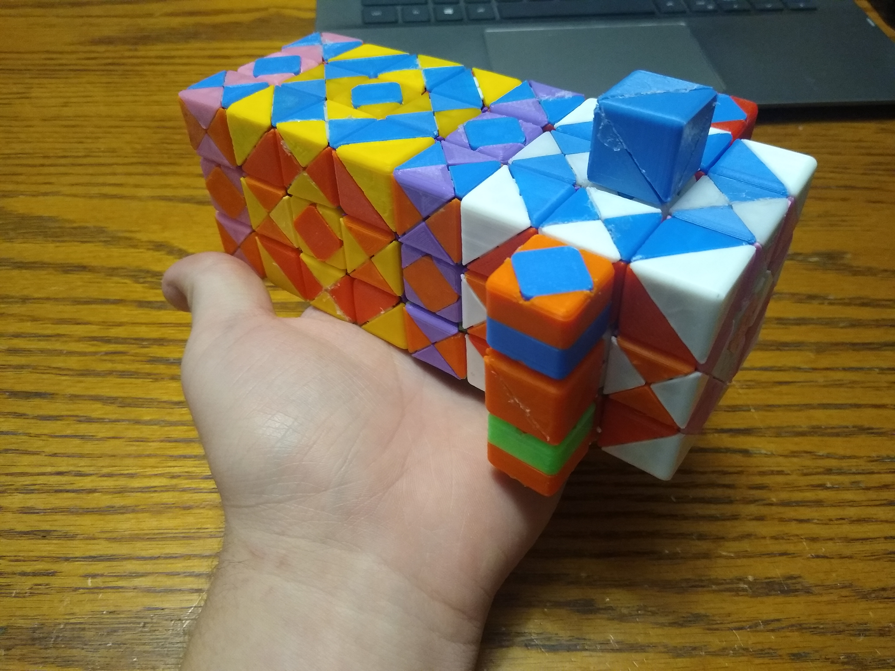
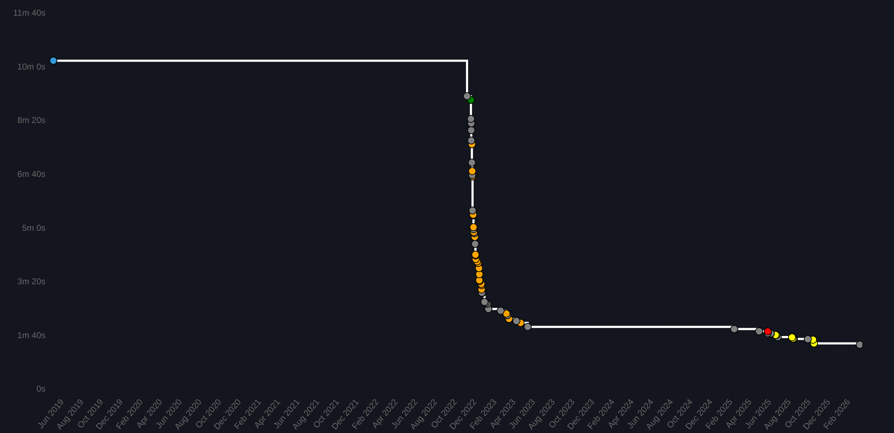
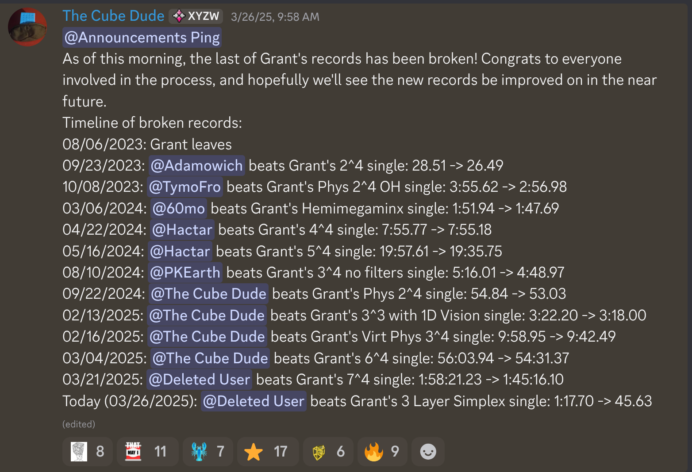
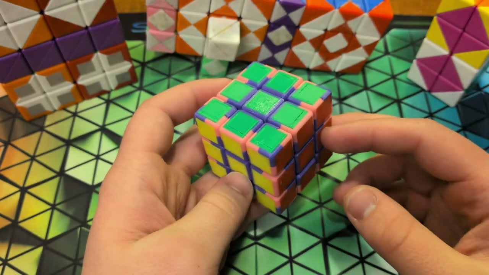

Pushing the boundaries of twisty puzzles into the fourth dimension.
I was first exposed to hypercubing in June of 2018 when the youtube channel Can Chris Solve? posted his videos on Melinda's 2x2x2x2. At the time I was still in middle school, and didn't have the means to buy a 2x2x2x2 because they were quite expensive at the time. But, after some searching, I found the Magic Cube 4d program which I downloaded, and tried to understand the crazy puzzles in it, but I couldn't really make sense of any of them, and soon forgot about it.
A few years later in April of 2020, I rediscovered hypercubing when some of Melinda Green's videos came up in my youtube recommendations. I still couldn't afford one, but one thing had changed since 2018, I now had a 3d printer. So, after exchanging some emails with Melinda, I 3D printed and built my own 2x2x2x2 using permanent markers for the colors.

After building the 2x2x2x2, I did a few solves, even getting a 2:30 time which was only 4 seconds above the World Record at the time. But, eventually it ended up just sitting on my shelf.
Until January 16, 2022, I got an email from Melinda Green with news that the 2x2x2x2 was being mass produced and would be much cheaper! This was amazing news, but the email came with something even better than that, a link to a new and developing hypercubing discord server. I joined the server just to see what was happening. Rowan Fortier who had created the server quickly took interest in my self made puzzle and immediately challenged me to build a design for a 2x2x2x3 that had recently been made by hypercubers server member Luna. After some discussion, I made this rendering of the 2x2x2x3:

One thing led to another and after some work on magnet layouts, a bit of prototyping, lots of work assembling, and some days when school conveniently got canceled, I finished the 2x2x2x3 on February 3, 2022

During the construction of the 2x2x2x3, I also rendered 2x2x3x3 and 2x3x3x3 puzzles using similar designs. Importantly, I also expanded my 4d experience by starting to work with virtual puzzles! Shortly after joining the discord server I completed my first solve of the 3x3x3x3 on January 20, 2022 using MC4D:

A critical discovery came when I tried to use the physical 2x2x2x3 with the 2x2x2 cells gyro'd onto the primary axis like this:

This led to the first rendering of the physical 3x3x3x3, and over the next 6 months I slowly worked up to constructing the first 3x3x3x3 with 2x2x3x3 and 2x3x3x3 as steps along the way. As well as designs for the 1x3x3x3, 1x1x3x3, and other puzzles being rendered in the mean time. The 3x3x3x3 was completed on July 22nd, 2022. More details of the process of building the 3x3x3x3 can be found in this video.

During this process, I also began speedsolving the physical 2x2x2x2. Using the method I had developed for solving it (which is now the meta speedsolving method), I lowered my times until on August 7th, 2022, I got my first WR time of a 1:23.28. This record continued to drop until I got the first ever sub 1 minute solve of 56.65 on October 3rd, 2022.
But, little did I know, this was just the beginning of hyperspeedcubing. At the time the physical 2x2x2x2 was basically the only puzzle people were consistently speedsolving, because the only option for other puzzles was to use mouse controls. The record for the virtual 3x3x3x3 at the time was an incredibly impressive 10:11.87 solve by Tetrian22. But, in the year 2022, a new program, hyperspeedcube (aka HSC) was being developed by Hactar for speedsolving hypercubes with keyboard controls and piece filters. After Hactar got a record breaking 9:05.82 solve with it on November 6th 2022, I started to work on speedsolving the 3x3x3x3.
My record at the time was just under 30 minutes using mouse controls, but, I put in some practice to teach myself a cfop-like method and learned the keyboard controls. I got my first WR for a virtual hypercube on November 21st, 2022 with a time of 7:36.42. From there, the record dropped rapidly as Hactar and I traded the record back and forth over the next few months until it settled around the 2 minute mark. You can see how dramatic this drop in times was on this graph of the 3x3x3x3 WR over time:

In addition to the 3x3x3x3, this rush of hyperspeedcubing also led to many other virtual puzzles being speedsolved. I particularly enjoyed solving higher order hyper cubes such as the 4x4x4x4 and 5x5x5x5 hypercubes. By nature of being one of the first people to start speedsolving these puzzles, I had the unique opportunity to push the boundaries of hypercubing and be one of the top solvers. Because of this fact, and lots of practice, on March 16th, 2023, I achieved a full sweep of the hypercubing leaderboard:
The sweep didn't last long when multiple of the records were beaten, but it was amazing to accomplish that at the time.
Hyperspeedcubing continued to progress and I continued to try to stay at the cutting edge until August of 2023 when I left to server a 2 year mission of service for my church. This was an amazing experience, but it meant that I was not actively hypercubing for that time. When I left, I held the 1st place spot for 12 of the 18 events on the hypercubers leaderboard, and, by the time I returned they had all been beaten.

However, this was super exciting, it meant that hypercubing was continuing to progress and push boundaries, and it gave me competition for when I returned!
Since I have returned to hypercubing in August of 2025, I have tried to retake some top times on the leaderboard and continue to push the limits of what is possible in hypercubing. I have successfully taken back the top times for a few events, most notably the higher order hypercube series of 4x4x4x4, 5x5x5x5, 6x6x6x6, and 7x7x7x7. You can see the current status of these records on the hypercubing leaderboard. I have also started to get into the new 5d puzzles that started to have competition while I was gone.
I have recently began working to further advance physical hypercube puzzles aswell, finally constructing my design for a physical 1x3x3x3, improving the 3x3x3x3, and more, with hopes to eventually sell the puzzles to make them more accessible.

I am super excited to see what the future of hypercubing holds! (updated March 2026)